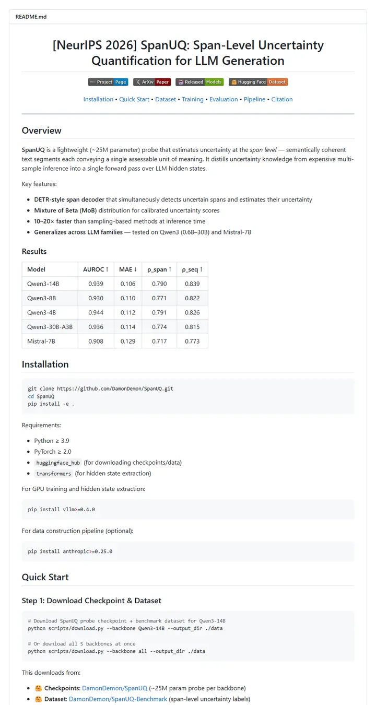
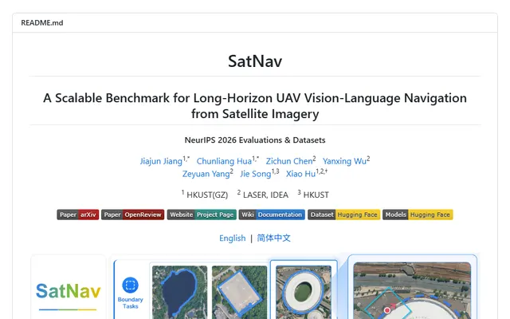

damon-demon/SpanUQ
A command-line tool's manual with a conference stamp: a bracketed headline, four small colored tabs, a dotted jump bar, and numbers before the first paragraph ends.

Checked against the rendered page. Clone URL github.com/DamonDemon/SpanUQ returns 404 (repo is damon-demon/SpanUQ); Pipeline note links to a nonexistent anchor #option-1-use-pre-built-dataset-recommended; Dataset text says ~293K spans while the table lists 344,288 per Qwen backbone; h1 shortens the title to 'LLM Generation' and the BibTeX is an arXiv @article.
Why it is here
The bracketed-venue title, one row of styled badges and an inline section nav bar sit above a compact results table, and the step-numbered Quick Start includes sample output, a good pattern for a tool-style repo.
Overview
Header Block
Badge Colors
Section Outline
Guidelines
More like this


